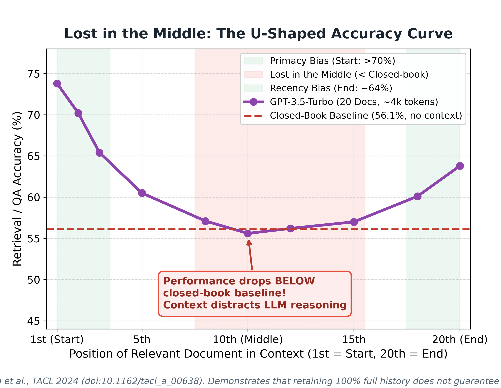

1. The Workload & Memory Scaling Problem
Workload Profile
In multi-turn chat serving, every new request re-sends the cumulative dialogue history. Because transformers require causal attention across all prior tokens, the prefill computational burden scales quadratically with turn count T:
No Cache: Σ L_t = T·S + m·T(T-1)/2 + T·u == O(T²)
Prefix Caching: ≈ S + u + (T-1)·m == O(T)

KV-Cache VRAM Demand: In modern architectures, KV cache scales as 2 × layers × kv_heads × head_dim × bytes per token. For an 8B parameter model (FP16), this consumes ~128 KiB per token (~1 GiB per 8k context), directly constraining concurrent batch size and triggering preemption under high multi-tenant load.
2. Runtime Stack: PagedAttention & Prefix Caching
Engine ArchitecturePagedAttention (Kwon et al., SOSP 2023): Traditional serving frameworks allocated contiguous VRAM for maximum sequence lengths, resulting in 60–80% internal/external fragmentation. vLLM organizes KV cache into fixed-size physical blocks (16 tokens), achieving <4% waste and enabling dynamic memory sharing via block tables.
Automatic Prefix Caching (APC): Reusable blocks are indexed by a recursive cryptographic hash of their tokens and all preceding blocks:
The Prefix Invalidation Rule: Cache lookup matches sequentially from token index 0. If token index i changes, every subsequent block is invalidated, forcing complete recomputation.
3. Application Context Strategies vs. Engine Reuse
Systems Trade-OffApplication-level context pruning strategies clash directly with runtime block reuse:

| Strategy | Prefix Hash Stability | Engine Cache Hit | VRAM & Energy Behavior |
|---|---|---|---|
| Full History | Strictly Stable | Near 100% | Growing VRAM; attention read overhead |
| Sliding Window | Shifts Every Turn | 0% (Full Miss) | Bounded VRAM; redundant prefill computation |
| Summarisation | Altered Prefix | 0% (Miss) | Bounded VRAM; expensive autoregressive decode tax |
4. Accuracy Trade-Off: "Lost in the Middle"
Evaluation BaselineFull history cannot be treated as a loss-free accuracy baseline. Liu et al. (TACL 2024) demonstrate that decoder-only models exhibit a U-shaped accuracy degradation curve:

Implication: Truncation and summarisation are not purely performance optimizations; they can prevent intermediate conversational instructions from being lost in the attention blind spot.
5. Research Questions & Hypotheses
Scientific GoalsRQ1 (Energy Scaling & Prefill/Decode Divergence)
Question: How does per-turn energy scale with conversation length under prefix caching?
Hypothesis: Prefix caching flattens prefill energy, but because decode operations dominate power draw per token (Fernandez et al., ACL 2025), total energy savings will be significantly smaller than token savings.
RQ2 / O2 (The Break-Even Analysis - Primary Contribution)
Question: What is the net energy overhead of context summarization, and at what conversation length does it reach a break-even point compared to KV-cache reuse?
Hypothesis: In short dialogues (T < T*), summarisation incurs a net energy loss due to autoregressive generation overhead. Only past a critical length T* does the reduced prefill length compensate for summarisation decode costs.
RQ3 (Carbon Accounting & API Auditing)
Question: Do estimation tools like EcoLogits account for cached tokens?
Hypothesis: Commercial estimators driving corporate reporting focus on generated tokens, misrepresenting the real energy impact of prompt caching.
6. Test Harness & Container Ablation Matrix
Phase 2 ImplementationTo isolate individual optimization mechanisms from combined effects, Phase 2 implements a multi-container Docker testbed serving vLLM:

Testbed Specifications:
- Hardware: Server with 2 × NVIDIA RTX 4080 (16 GB VRAM each). Single-GPU execution (tensor parallelism avoided due to +29–55% energy penalty).
- Models: Small open-weight instruct models (Qwen3-4B / Llama-3.2-3B, BF16).
- Instrumentation: High-frequency NVML energy counters + CodeCarbon; idle baseline power subtracted; 5 repetitions per condition.
- Benchmark: Scripted dialogues with recall probes planted at Early, Middle, and Recent positions.